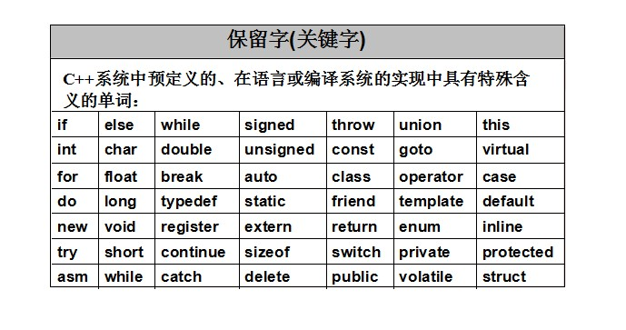
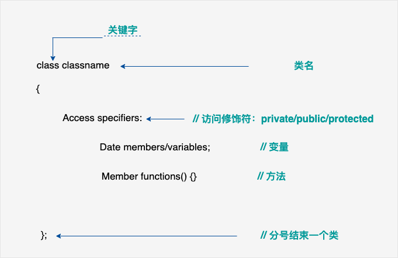
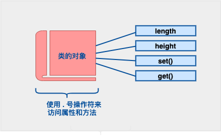
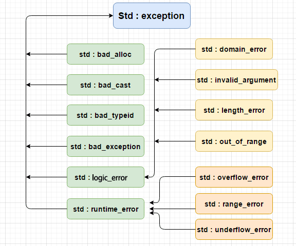

简介
C++ 进一步扩充和完善了 C 语言，最初命名为带类的C，后来在 1983 年更名为 C++。 -- Bjarne Stroustrup
注意：使用静态类型的编程语言是在编译时执行类型检查，而不是在运行时执行类型检查。
标准化
| 发布时间 | 通称 | 备注 |
|---|---|---|
| 2017 | C++17 | 第五个C++标准 |
| 2017 | coroutines TS | 协程库扩展 |
| 2017 | ranges TS | 提供范围机制 |
| 2017 | library fundamentals TS | 标准库扩展 |
| 2016 | concurrency TS | 用于并发计算的扩展 |
| 2015 | concepts TS | 概念库，用于优化编译期信息 |
| 2015 | TM TS | 事务性内存操作 |
| 2015 | parallelism TS | 用于并行计算的扩展 |
| 2015 | filesystem TS | 文件系统 |
| 2014 | C++14 | 第四个C++标准 |
| 2011 | - | 十进制浮点数扩展 |
| 2011 | C++11 | 第三个C++标准 |
| 2010 | - | 数学函数扩展 |
| 2007 | C++TR1 | C++技术报告：库扩展 |
| 2006 | - | C++性能技术报告 |
| 2003 | C++03 | 第二个C++标准 |
| 1998 | C++98 | 第一个C++标准 |
关键字

三字符组
三字符组就是用于表示另一个字符的三个字符序列，又称为三字符序列。三字符序列总是以两个问号开头。
三字符序列不太常见，但 C++ 标准允许把某些字符指定为三字符序列。以前为了表示键盘上没有的字符，这是必不可少的一种方法。
三字符序列可以出现在任何地方，包括字符串、字符序列、注释和预处理指令。
| 三字符组 | 替换 |
|---|---|
??= |
# |
??/ |
\ |
??' |
^ |
??( |
[ |
??) |
] |
??! |
| |
??< |
{ |
??> |
} |
??- |
~ |
左值 & 右值
- 左值（lvalue）：==指向内存位置的表达式==被称为左值（lvalue）表达式。左值可以出现在赋值号的左边或右边。
- 右值（rvalue）：术语右值（rvalue）==指的是存储在内存中某些地址的数值==。右值是不能对其进行赋值的表达式，也就是说，右值可以出现在赋值号的右边，但不能出现在赋值号的左边。
变量是左值，因此可以出现在赋值号的左边。数值型的字面值是右值，因此不能被赋值，不能出现在赋值号的左边。
长代码分割
字符串字面值或常量是括在双引号 "" 中的。一个字符串包含类似于字符常量的字符：普通的字符、转义序列和通用的字符。
您可以使用 ** 做分隔符，把一个很长的字符串常量进行分行。
string greeting2 = "hello, \
runoob";
类型限定符
| 限定符 | 含义 |
|---|---|
| const | const 类型的对象在程序执行期间不能被修改改变。 |
| volatile | 修饰符 volatile 告诉编译器不需要优化volatile声明的变量，让程序可以直接从内存中读取变量。对于一般的变量编译器会对变量进行优化，将内存中的变量值放在寄存器中以加快读写效率。 |
| restrict | 由 restrict 修饰的指针是唯一一种访问它所指向的对象的方式。只有 C99 增加了新的类型限定符 restrict。 |
存储类
存储类定义 C++ 程序中变量/函数的范围（可见性）和生命周期。这些说明符放置在它们所修饰的类型之前。下面列出 C++ 程序中可用的存储类：
-
auto -
register -
static -
extern -
mutable -
thread_local (C++11)
从 C++ 17 开始，auto 关键字不再是 C++ 存储类说明符，且 register 关键字被弃用。
auto 存储类
自 C++ 11 以来，auto 关键字用于两种情况：声明变量时根据初始化表达式自动推断该变量的类型、声明函数时函数返回值的占位符。
C++98标准中auto关键字用于自动变量的声明，但由于使用极少且多余，在 C++17 中已删除这一用法。
根据初始化表达式自动推断被声明的变量的类型，如：
auto f=3.14; //double
auto s("hello"); //const char*
auto z = new auto(9); // int*
auto x1 = 5, x2 = 5.0, x3='r';//错误，必须是初始化为同一类型
register 存储类
register 存储类用于定义存储在==寄存器==中而不是 RAM 中的局部变量。这意味着变量的最大尺寸等于寄存器的大小（通常是一个词），且不能对它应用一元的 '&' 运算符（因为它没有内存位置）。
{
register int miles;
}
static 存储类
static 存储类指示编译器在程序的生命周期内保持局部变量的存在，而不需要在每次它进入和离开作用域时进行创建和销毁。因此，使用 static 修饰局部变量可以在函数调用之间保持局部变量的值。
static 修饰符也可以应用于全局变量。当 static 修饰全局变量时，会使变量的作用域限制在声明它的文件内。
在 C++ 中，当 static 用在类数据成员上时，会导致仅有一个该成员的副本被类的所有对象共享。【==属于类==】
#include <iostream>
// 函数声明
void func(void);
static int count = 10; /* 全局变量 */
int main() {
while(count--)
{
func();
}
return 0;
}
// 函数定义
void func( void ) {
static int i = 5; // 局部静态变量
i++;
std::cout << "变量 i 为 " << i ;
std::cout << " , 变量 count 为 " << count << std::endl;
}
extern 存储类
extern 存储类==用于提供一个全局变量的引用==，全局变量对所有的程序文件都是可见的。当使用 'extern' 时，对于无法初始化的变量，会把变量名指向一个之前定义过的存储位置。
有多个文件且定义了一个可以在其他文件中使用的全局变量或函数时，可以在其他文件中使用 extern 来得到已定义的变量或函数的引用。可以这么理解，extern 是用来在另一个文件中声明一个全局变量或函数。
extern 修饰符通常用于当有两个或多个文件共享相同的全局变量或函数的时候，如下所示：
#include <iostream>
int count ;
extern void write_extern();
int main() {
count = 5;
write_extern();
}
#include <iostream>
extern int count;
void write_extern(void) {
std::cout << "Count is " << count << std::endl;
}
mutable 存储类
mutable 说明符仅适用于类的对象，它允许对象的成员替代常量。也就是说，mutable 成员可以通过 const 成员函数修改。
thread_local 存储类
使用 thread_local 说明符声明的变量==仅可在它在其上创建的线程上访问==。 变量在创建线程时创建，并在销毁线程时销毁。 每个线程都有其自己的变量副本。
thread_local 说明符可以与 static 或 extern 合并。
可以将 thread_local 仅应用于数据声明和定义，thread_local 不能用于函数声明或定义。
以下演示了可以被声明为 thread_local 的变量：
thread_local int x; // 命名空间下的全局变量
class X {
static thread_local std::string s; // 类的 static 成员变量
};
static thread_local std::string X::s; // X::s 是需要定义的
void foo() {
thread_local std::vector<int> v; // 本地变量
}
类和对象
定义一个类，本质上是定义一个数据类型的蓝图。这实际上并没有定义任何数据，但它定义了类的名称意味着什么，也就是说，它定义了类的对象包括了什么，以及可以在这个对象上执行哪些操作。
如 Human 类：身高、体重、年龄、行为等都可以抽象出来。

类定义是以关键字 class 开头，后跟类的名称。类的主体是包含在一对花括号中。类定义后必须跟着一个分号或一个声明列表。
class Box {
public:
double length; // 盒子的长度
double breadth; // 盒子的宽度
double height; // 盒子的高度
};
// 类名可以当作数据类型来用，相当于自定义的数据类型标识
Box Box1; // 声明 Box1，类型为 Box
成员变量/函数

- 类的成员函数：是指那些把定义和原型写在类定义内部的函数，就像类定义中的其他变量一样。类成员函数是类的一个成员，它可以操作类的任意对象，可以访问对象中的所有成员。
- 成员函数可以定义在类定义内部，或者单独使用
范围解析运算符 ::来定义。在类定义中定义的成员函数把函数声明为内联的，即便没有使用inline标识符。
class Box {
public:
// 成员变量声明
double length; // 长度
double breadth; // 宽度
double height; // 高度
// 成员函数声明
double getVolume(void);
void setLength( double len );
void setBreadth( double bre );
void setHeight( double hei );
};
修饰符
数据封装是面向对象编程的一个重要特点，它防止函数直接访问类类型的内部成员。类成员的访问限制是通过在类主体内部对各个区域标记 public、private、protected 来指定的。
- 成员和类的默认访问修饰符是
private。
class Base {
public:
// 公有成员：在程序中类的外部是可访问的。
protected:
// 受保护成员：成员变量或函数与私有成员十分相似，但有一点不同，protected（受保护）成员在派生类（即子类）中是可访问的。
private:
// 私有成员：变量或函数在类的外部是不可访问的，甚至是不可查看的。只有类和友元函数可以访问私有成员。
};
普通成员
静态成员
可以使用 static 关键字来把类成员定义为静态的。当我们声明类的成员为静态时，这意味着无论创建多少个类的对象，静态成员都只有一个副本。【静态的是属于类的而不是属于对象的~】
如果把函数成员声明为静态的，就可以把函数与类的任何特定对象独立开来。静态成员函数即使在类对象不存在的情况下也能被调用，静态函数只要使用类名加范围解析运算符 :: 就可以访问。
静态成员函数只能访问静态成员数据、其他静态成员函数和类外部的其他函数。
静态成员函数有一个类范围，他们不能访问类的 this 指针。您可以使用静态成员函数来判断类的某些对象是否已被创建。
- 静态成员函数没有 this 指针，只能访问静态成员（包括静态成员变量和静态成员函数）。【因为属于类，
this 指针本质上是一个可变对象~】 - 普通成员函数有 this 指针，可以访问类中的任意成员；而静态成员函数没有 this 指针。
构造函数
类的构造函数是类的一种特殊的成员函数，它会在每次创建类的新对象时执行。
构造函数的名称与类的名称是完全相同的，并且不会返回任何类型，也不会返回 void
构造函数可用于为某些成员变量设置初始值。
默认的构造函数没有任何参数
构造函数也可以带有参数。
使用初始化列表来初始化字段（列表）
C++ 类构造函数 & 析构函数 | 菜鸟教程 (runoob.com)
#include <iostream> using namespace std; class Line { public: void setLength(double len); double getLength(void); double getWidthLength(void); Line(); // 无参构造函数 Line(double len); // 这是有参构造函数 Line(double len, double wid); // 测试初始化列表的构造函数 private: double length; double width; }; // 成员函数定义，包括构造函数 Line::Line() { cout << "调用了无参构造函数~" << "Object is being created, length = null" << endl; } // 成员函数定义，包括构造函数 Line::Line(double len) { cout << "调用了有参构造函数进行初始化~" << "Object is being created, length = " << len << endl; length = len; } // 调用初始化列表 Line::Line( double len, double wid): length(len), width(wid) { // 直接在这里就赋值了 cout << "调用了初始化列表的构造函数：" << len << endl; } void Line::setLength(double len) { length = len; } double Line::getLength(void) { return length; } double Line::getWidthLength(void) { return width; } // 程序的主函数 int main() { Line line2; Line line(10.0); // 获取默认设置的长度 cout << "调用构造函数初始化的长度是: " << line.getLength() << endl; // 再次设置长度 line.setLength(6.0); cout << "调用设置函数设置的长度是: " << line.getLength() << endl; Line line1(6.66, 8.88); // 获取默认设置的长度 cout << "调用初始化列表初始化的长度是: " << line.getLength() << endl; return 0; }拷贝构造函数
拷贝构造函数是一种特殊的构造函数，它在创建对象时，==是使用同一类中之前创建的对象来初始化新创建的对象。==拷贝构造函数通常用于：
- 通过使用另一个同类型的对象来初始化新创建的对象。
- 复制对象把它作为参数传递给函数。
- 复制对象，并从函数返回这个对象。
如果在类中没有定义拷贝构造函数，编译器会自行定义一个。如果==类带有指针变量==，并有动态内存分配，则它必须有一个拷贝构造函数。拷贝构造函数的最常见形式如下：
classname (const classname &obj) {
// 构造函数的主体
}
#include <iostream>
using namespace std;
class Line {
public:
int getLength( void );
Line( int len ); // 简单的构造函数
Line( const Line &obj); // 拷贝构造函数
~Line(); // 析构函数
private:
int *ptr;
};
// 成员函数定义，包括构造函数
Line::Line(int len) {
cout << "调用构造函数" << endl;
// 为指针分配内存
ptr = new int;
*ptr = len;
}
Line::Line(const Line &obj) {
cout << "调用拷贝构造函数并为指针 ptr 分配内存" << endl;
ptr = new int;
*ptr = *obj.ptr; // 拷贝值
}
Line::~Line(void) {
cout << "释放内存" << endl;
delete ptr;
}
int Line::getLength( void ) {
return *ptr;
}
void display(Line obj) {
cout << "line 大小 : " << obj.getLength() <<endl;
}
// 程序的主函数
int main( ) {
Line line1(10); // 调用构造函数
Line line2 = line1; // 这里调用了拷贝构造函数
display(line1); // 这里也调用了拷贝构造函数
display(line2); // 这里也调用了拷贝构造函数
return 0;
}
调用构造函数
调用拷贝构造函数并为指针 ptr 分配内存
调用拷贝构造函数并为指针 ptr 分配内存
line 大小 : 10
释放内存
调用拷贝构造函数并为指针 ptr 分配内存
line 大小 : 10
释放内存
释放内存
释放内存
析构函数
类的析构函数是类的一种特殊的成员函数，它会在每次删除所创建的对象时执行。
析构函数的名称与类的名称是完全相同的，只是在前面加了个波浪号（~）作为前缀，它不会返回任何值，也不能带有任何参数。析构函数有助于在跳出程序（比如关闭文件、释放内存等）前释放资源。
~TestClass(); // 这是析构函数声明
对象数组
This 指针
在 C++ 中，每一个对象都能通过 this 指针来访问自己的地址。this 指针是所有成员函数的隐含参数。因此，在成员函数内部，它可以用来指向调用对象。
友元函数没有 this 指针，因为友元不是类的成员。只有成员函数才有 this 指针。
当我们调用成员函数时，实际上是替某个对象调用它。
成员函数通过一个名为 this 的额外隐式参数来访问调用它的那个对象，当我们调用一个成员函数时，用请求该函数的对象地址初始化 this。
内联函数
C++ 内联函数是通常与类一起使用。如果一个函数是内联的，那么在编译时，编译器会把该函数的代码副本放置在每个调用该函数的地方。
对内联函数进行任何修改，都需要重新编译函数的所有客户端，因为编译器需要重新更换一次所有的代码，否则将会继续使用旧的函数。
如果想把一个函数定义为内联函数，则需要在函数名前面放置关键字 inline，在调用函数之前需要对函数进行定义。如果已定义的函数多于一行，编译器会忽略 inline 限定符。
在类定义中的定义的函数都是内联函数，即使没有使用 inline 说明符。
常函数
流
| 头文件 | 函数和描述 |
|---|---|
<iostream> |
该文件定义了 cin、cout、cerr 和 clog 对象，分别对应于标准输入流、标准输出流、非缓冲标准错误流和缓冲标准错误流。<iostream> 包含 <istream> 和 <ostream> |
<iomanip> |
该文件通过所谓的参数化的流操纵器（比如 setw 和 setprecision ），来声明对执行标准化 I/O 有用的服务。 |
<fstream> |
该文件为用户控制的文件处理声明服务。我们将在文件和流的相关章节讨论它的细节。 |
标准输出流（cout）
预定义的对象 cout 是 iostream 类 的一个实例。cout 对象"连接"到标准输出设备，通常是显示屏。cout 是与流插入运算符 << 结合使用的，如下所示：
实例
#include <iostream>
using namespace std;
int main( ) {
char str[] = "Hello C++";
cout << "Value of str is : " << str << endl;
}
当上面的代码被编译和执行时，它会产生下列结果：
Value of str is : Hello C++
标准输入流（cin）
预定义的对象 cin 是 iostream 类 的一个实例。cin 对象附属到标准输入设备，通常是键盘。cin 是与流提取运算符 >> 结合使用的，如下所示：
实例
#include <iostream>
using namespace std;
int main( ) {
char name[50];
cout << "请输入您的名称： ";
cin >> name;
cout << "您的名称是： " << name << endl;
}
标准错误流（cerr）
预定义的对象 cerr 是 iostream 类 的一个实例。cerr 对象附属到标准输出设备，通常也是显示屏，但是 cerr 对象是非缓冲的，且每个流插入到 cerr 都会立即输出。
cerr 也是与流插入运算符 << 结合使用的，如下所示：
实例
#include <iostream>
using namespace std;
int main( ) {
char str[] = "Unable to read....";
cerr << "Error message : " << str << endl;
}
当上面的代码被编译和执行时，它会产生下列结果：
Error message : Unable to read....
标准日志流（clog）
预定义的对象 clog 是 iostream 类 的一个实例。clog 对象附属到标准输出设备，通常也是显示屏，但是 clog 对象是缓冲的。这意味着每个流插入到 clog 都会先存储在缓冲区，直到缓冲填满或者缓冲区刷新时才会输出。
clog 也是与流插入运算符 << 结合使用的，如下所示：
实例
#include <iostream>
using namespace std;
int main( ) {
char str[] = "Unable to read....";
clog << "Error message : " << str << endl;
}
当上面的代码被编译和执行时，它会产生下列结果：
Error message : Unable to read....
通过这些小实例，我们无法区分 cout、cerr 和 clog 的差异，但在编写和执行大型程序时，它们之间的差异就变得非常明显。所以良好的编程实践告诉我们，使用 cerr 流来显示错误消息，而其他的日志消息则使用 clog 流来输出。
endl
插入换行符并刷新输出流。
原因是对于一个函数而言，函数名本身就代表函数的入口地址，而函数名前加 & 也代表函数的入口地址。
cout<<"Hello world"<<&endl;==cout<<"Hello world"<<endl;在
<iostream>头文件中定义的操纵符有：endl:输出时插入换行符并刷新流 endls：输出时在字符 插入 NULL 作为尾符 flush：刷新缓冲区，把流从缓冲区输出到目标设备，并清空缓冲区 ws：输入时略去空白字符 dec：令 IO 数据按十进制格式 hex：令 IO 数据按十六进制格式 oct：令 IO 数据按八进制格式
:: 作用域运算符
std::使用定义在 std 命名空间的名称。
std::是个名称空间标示符，C++ 标准库中的函数或者对象都是在命名空间 std中定义的，所以我们要使用标准函数库中的函数或对象都要使用 std 来限定。
如：
----------
#include<iostream.h> // 这种非标准的库包含就不需要加 std:: 限定
#include<iostream> // 这种标准的就需要
----------
#include<iostream>
using std::cout; // 指定命名空间中的特定项目，如使用 std 命名空间中的 cout 部分
using std::endl;
// 或者直接：using namespace std;
int main() {
cout << "我喜欢C++"; // 输出一句话
cout << endl; // 换行
return 0;
}
命名空间
为了解决同名问题，比如有两只猫都叫招财，但是你家的招财和我家的招财应该是两只不同的猫，怎么区分呢？那就是加限定词，如“张三家的”，”李四家的“ 用来区分。
因此，引入了命名空间这个概念，专门用于解决上面的问题，它可作为附加信息来区分不同库中相同名称的 函数、类、变量 等。使用了命名空间即定义了上下文。本质上，命名空间就是定义了一个范围。
定义命名空间
命名空间的定义使用关键字 namespace ，后跟命名空间的名称，如下所示：
// 定义命名空间
namespace namespace_name {
// 代码声明
}
// 调用
name::code; // code 可以是变量或函数
#include <iostream>
using namespace std;
// 第一个命名空间
namespace first_space {
void func(){
cout << "Inside first_space" << endl;
}
}
// 第二个命名空间
namespace second_space {
void func(){
cout << "Inside second_space" << endl;
}
}
// 同样是 func 但是在不同的命名空间中，其实就是同名的两个不一样的函数。
int main () {
// 调用第一个命名空间中的函数
first_space::func();
// 调用第二个命名空间中的函数
second_space::func();
return 0;
}
using 指令
您可以使用 using namespace 指令，这样在使用命名空间时就可以不用在前面加上命名空间的名称。这个指令会告诉编译器，后续的代码将使用指定的命名空间中的名称。【就近原则】
using std::cout; // 指定命名空间中的特定项目，如使用 std 命名空间中的 cout 部分
不连续的命名空间
命名空间可以定义在几个不同的部分中，因此命名空间是由几个单独定义的部分组成的。一个命名空间的各个组成部分可以分散在多个文件中。
所以，如果命名空间中的某个组成部分需要请求定义在另一个文件中的名称，则仍然需要声明该名称。
嵌套的命名空间
命名空间可以嵌套，您可以在一个命名空间中定义另一个命名空间。
namespace namespace_name1 {
// 代码声明
namespace namespace_name2 {
// 代码声明
}
}
----------
// 可以通过使用 :: 运算符来访问嵌套的命名空间中的成员
// 访问 namespace_name2 中的成员
using namespace namespace_name1::namespace_name2;
// 访问 namespace_name1 中的成员
using namespace namespace_name1;
内存管道
C++ 程序中的内存分为两个部分：
- 栈： 在函数内部声明的所有变量都将占用栈内存。
- 堆： 这是程序中未使用的内存，在程序运行时可用于动态分配内存。
new 和 delete 运算符
下面是使用 new 运算符来为任意的数据类型动态分配内存的通用语法：
new data-type;
在这里，data-type 可以是包括数组在内的任意内置的数据类型，也可以是包括类或结构在内的用户自定义的任何数据类型。例如，我们可以定义一个指向 double 类型的指针，然后请求内存，该内存在执行时被分配。我们可以按照下面的语句使用 new 运算符来完成这点：
// 如果自由存储区已被用完，可能无法成功分配内存。所以建议检查 new 运算符是否返回 NULL 指针，并采取以下适当的操作：
double* pvalue = NULL; // 初始化为 null 的指针
if(!(pvalue = new double )) { // 为变量请求内存
cout << "Error: out of memory." <<endl;
exit(1);
}
new 与 malloc() 函数相比，其主要的优点是，new 不只是分配了内存，它还创建了对象。
在任何时候，当您觉得某个已经动态分配内存的变量不再需要使用时，您可以使用 delete 操作符释放它所占用的内存。
delete pvalue; // 释放 pvalue 所指向的内存
----------
char* pvalue = NULL; // 初始化为 null 的指针
pvalue = new char[20]; // 为变量请求内存
// 要删除我们刚才创建的数组，语句如下：
delete [] pvalue; // 删除 pvalue 所指向的数组
二维数组
int **array
// 假定数组第一维长度为 m， 第二维长度为 n
// 动态分配空间
array = new int *[m];
for( int i=0; i<m; i++ ) {
array[i] = new int [n] ;
}
//释放
for( int i=0; i<m; i++ ) {
delete [] array[i];
}
delete [] array;
三维数组
int ***array;
// 假定数组第一维为 m， 第二维为 n， 第三维为h
// 动态分配空间
array = new int **[m];
for( int i=0; i<m; i++ ) {
array[i] = new int *[n];
for( int j=0; j<n; j++ ) {
array[i][j] = new int [h];
}
}
//释放
for( int i=0; i<m; i++ ) {
for( int j=0; j<n; j++ ) {
delete[] array[i][j];
}
delete[] array[i];
}
delete[] array;
对象数组
TestClass * myTestClassArray = new TestClass[4]; // 定义 TestClass 类数组
delete [] myTestClassArray; // 删除数组
异常处理

| 异常 | 描述 |
|---|---|
std::exception |
该异常是所有标准 C++ 异常的父类。 |
std::bad_alloc |
该异常可以通过 new 抛出。 |
std::bad_cast |
该异常可以通过 dynamic_cast 抛出。 |
std::bad_exception |
这在处理 C++ 程序中无法预期的异常时非常有用。 |
std::bad_typeid |
该异常可以通过 typeid 抛出。 |
std::logic_error |
理论上可以通过读取代码来检测到的异常。 |
std::domain_error |
当使用了一个无效的数学域时，会抛出该异常。 |
std::invalid_argument |
当使用了无效的参数时，会抛出该异常。 |
std::length_error |
当创建了太长的 std::string 时，会抛出该异常。 |
std::out_of_range |
该异常可以通过方法抛出，例如 std::vector 和 std::bitset<>::operator[]()。 |
std::runtime_error |
理论上不可以通过读取代码来检测到的异常。 |
std::overflow_error |
当发生数学上溢时，会抛出该异常。 |
std::range_error |
当尝试存储超出范围的值时，会抛出该异常。 |
std::underflow_error |
当发生数学下溢时，会抛出该异常。 |
C++ 异常处理涉及到三个关键字： try、catch、throw 。
C++ 提供了一系列标准的异常，定义在
<exception>中。throw:当问题出现时，程序会抛出一个异常。这是通过使用 throw 关键字来完成的。throw语句的操作数可以是任意的表达式（任何地方），表达式的结果的类型决定了抛出的异常的类型。catch:在您想要处理问题的地方，通过异常处理程序捕获异常。catch 关键字用于捕获异常。try:try 块中的代码标识将被激活的特定异常。它后面通常跟着一个或多个 catch 块。try块中放置可能抛出异常的代码，try 块中的代码被称为保护代码。
try {
// 保护代码
}catch( ExceptionName e1 ) {
// catch 块
}catch( ExceptionName e2 ) {
// catch 块
}catch( ExceptionName eN ) {
// catch 块
}
// 不一定真的处理，取决于你写的异常处理代码，然后程序继续往下执行~
捕获异常
catch 块跟在 try 块后面，用于捕获异常。您可以指定想要捕捉的异常类型，这是由 catch 关键字后的括号内的异常声明决定的。
try {
// 保护代码
}catch( ExceptionName e ) {
// 处理 ExceptionName 异常的代码
}
会捕获一个类型为
ExceptionName的异常。如果您想让 catch 块能够处理 try 块抛出的任何类型的异常，则必须在异常声明的括号内使用省略号...
try {
// 保护代码
}catch(...) {
// 能处理任何异常的代码
}
定义新的异常
您可以通过 继承和重载 exception 类 来定义新的异常。
what() 是异常类提供的一个公共方法，它已被所有子异常类重载。这将返回异常产生的原因。
#include <iostream>
#include <exception>
using namespace std;
struct MyException : public exception {
const char * what () const throw () {
return "C++ Exception";
}
};
int main() {
try {
throw MyException();
}catch(MyException& e) { // 自定义的异常类型，重写了 what() 函数
std::cout << "MyException caught" << std::endl;
std::cout << e.what() << std::endl;
}catch(std::exception& e) {
//其他的错误
}
}
----------
D:\CPP_Project\CppTest\cmake-build-debug\CppTest.exe
MyException caught
C++ Exception
引用
引用和指针的区别
- 不存在空引用，引用必须连接到一个合法的内存。
- 一旦引用被初始化，就不能改变它的值。【就是说只能作为一块空间的引用，不能改变】指针可以随时改变指向的地址（空间）。
- 引用必须在创建的时候进行初始化，指针可以随时初始化。
引用：就是给同一块内存空间起别名。
变量类型 & = 变量;
e.g.
#include <iostream>
using namespace std;
int main () {
// 声明简单的变量
int i;
double d;
// 声明引用变量
int& r = i;
double& s = d;
i = 5;
cout << "Value of i : " << i << endl;
cout << "Value of i reference : " << r << endl;
d = 11.7;
cout << "Value of d : " << d << endl;
cout << "Value of d reference : " << s << endl;
return 0;
}
----------
// 题外话
- e.g. 是拉丁语 exempli gratia 的缩写，
- 如果直译，它的语义是： for the sake of example（为了举例）
- e.g.两个字母后面需不需要加“.”呢？都可以，有三种方法：
1. e.g.
2. eg.
3. eg
| 概念 | 描述 |
|---|---|
| 把引用作为参数 | C++ 支持把引用作为参数传给函数，这比传一般的参数更安全。 |
| 把引用作为返回值 | 可以从 C++ 函数中返回引用，就像返回其他数据类型一样。 |
把引用作为参数
void swap(int& x, int& y); 和用指针是一样的，同样是对地址的值进行操作，会影响实参的值。
把引用作为返回值
C++ 函数可以返回一个引用，方式与返回一个指针类似。
double& setValues(int i) {
double& ref = vals[i];
return ref; // 返回第 i 个元素的引用，ref 是一个引用变量，ref 引用 vals[i]
}
当返回一个引用时，要注意被引用的对象不能超出作用域。所以返回一个对局部变量的引用是不合法的，但是，可以返回一个对静态变量的引用。
int& func() {
int q;
//! return q; // 在编译时发生错误
static int x;
return x; // 安全，x 在函数作用域外依然是有效的
}
文件流
C++ 中的一个标准库
fstream。
| 数据类型 | 描述 |
|---|---|
ofstream |
该数据类型表示输出文件流，用于创建文件并向文件写入信息。【对外输出】 |
ifstream |
该数据类型表示输入文件流，用于从文件读取信息。【从外接收/输入】 |
fstream |
该数据类型通常表示文件流，且同时具有 ofstream 和 ifstream 两种功能，这意味着它可以创建文件，向文件写入信息，从文件读取信息。 |
打开文件
open() 函数是 fstream、ifstream 和 ofstream 对象的一个成员。
void open(const char *filename, ios::openmode mode);
// 第一参数指定要打开的文件的名称和位置，第二个参数定义文件被打开的模式。
| 模式标志 | 描述 |
|---|---|
ios::app |
追加模式。所有写入都追加到文件末尾。 |
ios::ate |
文件打开后定位到文件末尾。 |
ios::in |
打开文件用于读取。 |
ios::out |
打开文件用于写入。 |
ios::trunc |
如果该文件已经存在，其内容将在打开文件之前被截断，即把文件长度设为 0。 |
#include <iostream>
#include <fstream>
using namespace std;
int main () {
ofstream outfile;
outfile.open("file.txt", ios::out | ios::trunc);
outfile << "Writetest-----" << endl;
outfile << "Write test+++++" << endl; // 再次输出到文件
outfile.close();
char * data = new char[100];
ifstream infile;
infile.open("file.txt");
infile >> data;
cout << data << endl;
infile >> data; // 再次读取数据，运行可知每次只会读取到空格或者换行
cout << data << endl;
infile >> data; // 再次读取数据
cout << data << endl;
infile.close();
return 0;
}
以
空格或换行作为一次流的读取分割符号。
关闭文件
当 C++ 程序终止时，它会自动关闭刷新所有流，释放所有分配的内存，并关闭所有打开的文件。但程序员应该养成一个好习惯，在程序终止前关闭所有打开的文件。
下面是 close() 函数的标准语法，close() 函数是 fstream、ifstream 和 ofstream 对象的一个成员。
void close();
cin 对象的附加函数，比如 getline() 函数从外部读取一行，ignore() 函数会忽略掉之前读语句留下的多余字符。
// 定位到 fileObject 的第 n 个字节（假设是 ios::beg）
fileObject.seekg( n );
// 把文件的读指针从 fileObject 当前位置向后移 n 个字节
fileObject.seekg( n, ios::cur );
// 把文件的读指针从 fileObject 末尾往回移 n 个字节
fileObject.seekg( n, ios::end );
// 定位到 fileObject 的末尾
fileObject.seekg( 0, ios::end );
// 和 C 的 fseek() 类似
练习
- 实现一个基本 NPC 类，具备常规属性及功能(ID,名称，HP,MP，坐标，喊话，攻击技能，移动)
- 使用 C++ 的输入输出方式完成一个具有加减乘除功能的计算器。
- 使用 C++ 文件流的方式，将计算过程及结果输出至文件（例如 1 + 2 = 3）（在使用文件流的过程中，使用 new 和 delete 动态分配释放内存。）
- 根据第二题的计算机，重新编写，计算器的四个函数，使用同一个函数名，根据命名空间不同，具有不同的效果。